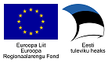
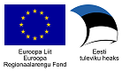

DHX protokolli etalonteostus
DHX on uus, X-tee v6 omadustele rajatud dokumendivahetusprotokoll, mis võimaldab Eesti avaliku sektori dokumendihaldussüsteemidel vahetada dokumente hajus- e detsentraliseeritud põhimõttel.
Protokolli on välja töötanud Riigi Infosüsteemi Amet.
Etalonteostus demonstreerib DHX protokolli töötamist. Ühtlasi on etalonteostust võimalik kasutada DHX-i võimekusega infosüsteemi testimiseks.
Etalonteostus on loodud projekti "Dokumendivahetustaristu hajusarhitektuurile üleviimise väljatöötamine" raames.